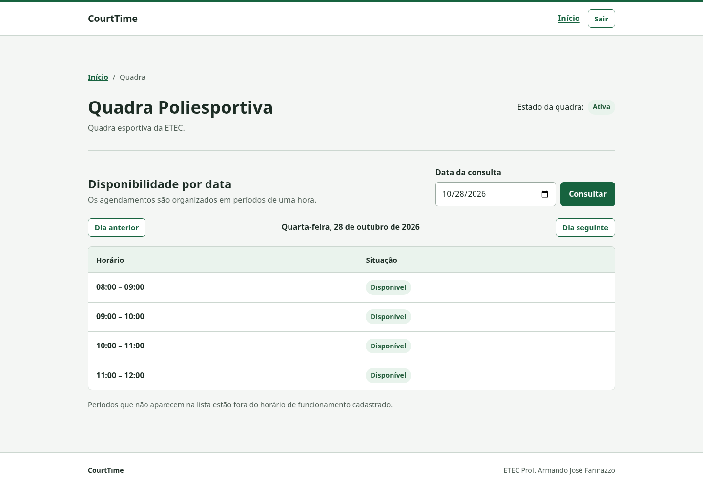

Ampliar captura Captura da versão 436b262 · TCC em equipeCourt Time
Da solicitação do aluno à conferência na portaria. Agendamento de quadra com participantes, PDFs e aprovação administrativa.
Sobre Court Time
TCC em equipe / Agendamento institucional
Sistema web desenvolvido em equipe para organizar o uso da quadra da ETEC. O processo passa por aluno, secretaria, administração e segurança, respeitando as regras institucionais de documentação e autorização.
- Consulta de horários e solicitação pelo aluno.
- Lista de participantes e formulário oficial em PDF.
- Conferência documental e registro da contribuição presencial.
- Aprovação com revalidação de disponibilidade e controle de acesso.
- Testes automatizados com PostgreSQL e integração contínua.
Projeto acadêmico. A assinatura é conferida pela secretaria; o pagamento permanece presencial. Imagem da baseline documentada 436b262.